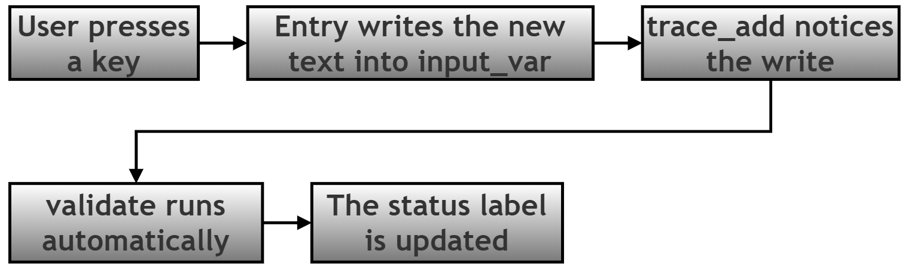
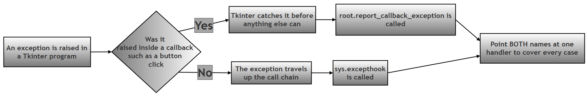
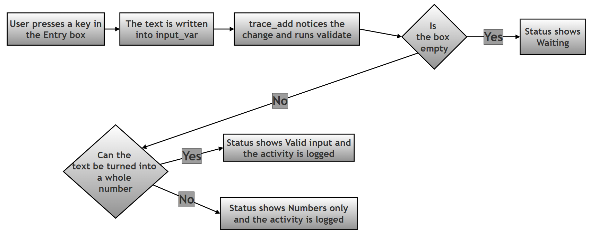
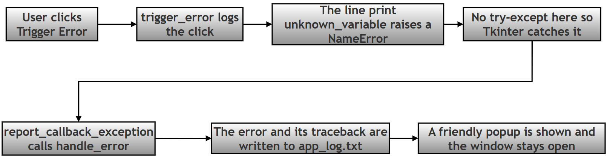
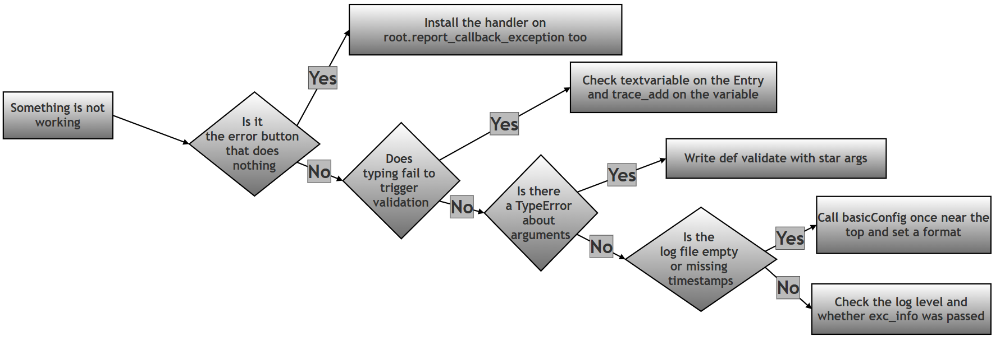

Professional Error Handling in Tkinter: Logging, Global Hooks and Live Validation — Worked Answer¶
Table of Contents¶
- About This Page
- Research / Project Question
- Answer to Part A — Theory
- The Tkinter Trap: Making the Trigger Error Button Work
- Answer to Part B — The Model Script
- Flowchart
- Common Errors and How to Fix Them
- Summary of Changes Made to This Page
About This Page¶
This page is part of the extended, GitHub-only material that accompanies Chapter 14 (Tkinter and GUI Programming) of the printed textbook. It contains one of the chapter's research and project questions, followed by a complete worked answer: the theory, a full model program, and a troubleshooting guide.
The theme is what separates a working program from a finished one. A beginner's program is judged by whether it does the right thing when everything goes well. A professional program is judged by what it does when things go badly — and it earns that reputation through three habits that this page examines in turn:
- Keeping a written record.
print()vanishes the moment the window closes.loggingwrites to a file that is still there tomorrow, when you are trying to work out what went wrong. - Having a safety net. No matter how carefully you write
try-exceptblocks, something eventually fails somewhere you did not anticipate. A global handler catches whatever slips through. - Helping the user as they type. Instead of letting someone fill in a whole form and then telling them it was wrong, live validation reacts to every keystroke.
Why This Topic Matters for Python and for Chapter 14¶
For Python in general: logging and global exception handling are not GUI topics at all. They are the same in a web server, a data pipeline, or a script that runs overnight on a schedule. Any program that runs when you are not watching needs to be able to tell you afterwards what happened, and this page introduces the standard Python tools for that. The third topic, watching a value and reacting when it changes, is the observer idea that underlies reactive frameworks in almost every language.
For this chapter in particular: the printed chapter shows widgets that respond when clicked. This page adds the machinery that turns those widgets into something you could hand to another person: input that checks itself as it is typed, a log file recording what happened, and a safety net that turns a crash into a polite message. It also demonstrates a Tkinter-specific trap, described in its own section below, which stops the usual global safety net from catching button-click errors unless you install it in a second place.
Every error message, log file and block of output on this page was produced by actually running the code on Python 3.12 with Tk 8.6.14. Nothing here is guessed.
Related Pages in This Series¶
Three pages in this chapter deal with catching errors that your own try-except blocks did not catch. They share one approach, so a handler written for any one of them works unchanged in the others. They are best read in this order:
| Page | What it covers |
|---|---|
| 070 — Handling Uncaught Exceptions | What a global exception handler is, and the two places it has to be installed in a Tkinter program. |
| 080 — Safe and Unsafe Delayed Callbacks | The same handler applied to work scheduled with after(), compared side by side against handling the error locally with try-except. |
| 090 — Professional Error Handling (this page) | The same handler working alongside logging to a file and live input validation. |
Key Terms Used On This Page¶
| Term | In plain words | Learn more |
|---|---|---|
logging |
Python's built-in module for recording what a program did, into a file that survives after the program closes. | Python docs: logging |
| Log level | How important a recorded message is. The common ones, from least to most serious, are DEBUG, INFO, WARNING, ERROR and CRITICAL. You choose the lowest level worth keeping. | Python docs: Logging levels |
sys.excepthook |
A function Python calls when an exception reaches the top of the program without being handled anywhere. It can be replaced with your own function. | Python docs: sys.excepthook |
report_callback_exception |
Tkinter's own equivalent of sys.excepthook, used for errors raised inside button clicks and other callbacks. It has its own section below, because this page depends on it. |
Python docs: tkinter |
StringVar |
A special Tkinter variable that holds a piece of text and can be watched. An ordinary Python string cannot be watched, which is why this exists. | Python docs: tkinter |
trace_add() |
The method that asks Tkinter to run one of your functions whenever a StringVar (or similar variable) changes. |
Python docs: tkinter |
| Callback | A function you hand to something else so that it can be called later, on your behalf. | Wikipedia: Callback |
| Traceback | The block of text Python prints when an error is not handled, listing the error and the chain of calls that led to it. | Python docs: traceback |
NameError |
The error Python raises when you use a name that was never defined. It is used on this page simply because it is easy to cause deliberately. | Python docs: Built-in Exceptions |
Research / Project Question¶
Professional Error Handling in Tkinter¶
Modern GUI applications should be able to:
- validate user input automatically,
- record errors for debugging,
- safely handle unexpected failures.
Tkinter supports these features using: logging, sys.excepthook, report_callback_exception and trace_add()
Part A — Theory¶
Research and explain the following:
1. What is: logging and why is it used instead of: print()?¶
2. What is: sys.excepthook and what is its purpose?¶
3. What is: trace_add() and why is it useful with: StringVar()?¶
4. Explain: live validation with one example.¶
5. Why do professional applications log errors instead of only displaying them?¶
Part B — Script Writing¶
Write a Tkinter program that:
- Creates an Entry widget for numeric input.
- Validates input while typing using:
trace_add() -
Shows:
Valid inputorNumbers onlyin real time. -
Logs activity into:
app_log.txt -
Uses:
sys.excepthooktogether with Tkinter’sreport_callback_exceptionfor global exception handling. -
Adds a button:
Trigger Errorto deliberately create an uncaught error. -
Shows a friendly popup instead of crashing.
Optional Follow-Up Questions (not part of the printed book)¶
These extra questions appear only on this online page, for readers who want to take the investigation further. They are not required in order to answer the printed question.
- F1. Type the three letters of
abcinto the Entry box, then openapp_log.txt. How many lines were added, and why is it not one? What does this tell you about whentrace_add()fires? - F2.
validate(*args)accepts arguments it never uses. Print them withprint(args)inside the function. What are the three values Tkinter passes, and what do they mean? - F3. Change
level=logging.INFOtolevel=logging.ERRORand use the program again. Which lines still reach the file, and which disappear? Explain what a log level is for. - F4. The log file records every keystroke, which for a long form could become thousands of lines. Suggest two ways to keep the useful information without the noise.
- F5. Remove the line that installs the handler on
root.report_callback_exceptionand click Trigger Error. What happens on screen, what happens in the log file, and where does the error message actually go?
Answer to Part A — Theory¶
A1. What is logging and Why Use It Instead of print()?¶
Logging means:
recording program activity and errors in a file.
Example:
logging.info("User clicked")
Unlike print(), logs remain saved after the program closes.
That single difference is the whole argument, but it is worth unpacking, because print() looks perfectly adequate right up until the moment you need it and it is not there. A print() goes to the terminal window. If the program was started by double-clicking an icon there may be no terminal at all, so the message goes nowhere. Even when there is one, the text disappears when the window is closed, and nobody can tell you what it said three days ago when the problem actually happened.
print() |
logging |
|
|---|---|---|
| Where the message goes | The screen only | A file, and optionally the screen as well |
| How long it lasts | Temporary; gone when the window closes | Permanent; still there tomorrow |
| Useful for debugging later | Hard to debug later | Useful for debugging |
| Does it record when it happened? | No | Yes, with an automatic timestamp |
| Can you filter by importance? | No; everything or nothing | Yes, using levels such as INFO and ERROR |
| Can you switch it off without editing every line? | No, you must delete each print() |
Yes, by raising the level in one place |
| Suitable for a finished application | No | Yes |
Setting it up takes one line, usually near the top of the program:
import logging
# Step 1: Choose the file, the lowest level worth keeping, and the layout.
logging.basicConfig(
filename="app_log.txt", # where to write
level=logging.INFO, # keep INFO and above
format="%(asctime)s - %(levelname)s - %(message)s" # timestamp, severity, message
)
# Step 2: Record things as the program runs.
logging.info("User clicked") # ordinary activity
logging.error("Something went wrong") # a problem
That produces lines like this in the file:
2026-09-09 00:54:20,773 - INFO - User clicked
2026-09-09 00:54:20,774 - ERROR - Something went wrong
About levels. level=logging.INFO means "keep INFO messages and anything more serious". The ordinary ladder is DEBUG, INFO, WARNING, ERROR, CRITICAL. Setting the level to ERROR would keep only the last two, which is how the same program can be chatty while you are developing it and quiet once it is finished — without deleting a single line of code.
A2. What is sys.excepthook?¶
sys.excepthook is Python's:
global exception handler
It controls what Python does when an uncaught exception happens.
Normally the sequence of execution is as follows:
But sys.excepthook = handle_error changes the route.
Now the sequence is as follows:
This improves application safety.
The shape your function must have. Python does not pass a single error object to the hook. It passes exactly three values, so your replacement must accept three:
def handle_error(exc_type, exc_value, exc_traceback):
...
| Argument | What it holds | Example |
|---|---|---|
exc_type |
The class of the error. exc_type.__name__ gives its plain name. |
NameError |
exc_value |
The exception object. Printing it gives the message. | name 'unknown_variable' is not defined |
exc_traceback |
The full stack trace, showing every line involved. | Passed to logging so the file records where it happened. |
A function that accepts the wrong number of arguments produces an error inside your error handler, which is a confusing situation worth avoiding.
An important limitation applies to this page's program in particular: sys.excepthook does not catch errors raised inside Tkinter callbacks, which includes every button click. That has its own section below, because the Trigger Error button required by Part B depends on it.
A3. What is trace_add()?¶
trace_add() monitors a Tkinter variable.
Example:
name_var.trace_add("write", validate)
# Meaning: whenever the variable changes, run validate()
It is commonly used with StringVar() because Entry widgets use variables.
That last sentence is the key to the whole mechanism, and it is worth following the chain slowly, because three separate things have to be connected before live validation works:
| Step | What you write | What it achieves |
|---|---|---|
| 1 | input_var = tk.StringVar() |
Creates a variable that Tkinter is able to watch. An ordinary Python string cannot be watched. |
| 2 | tk.Entry(root, textvariable=input_var) |
Ties the Entry box to that variable, so anything typed is written into it immediately. |
| 3 | input_var.trace_add("write", validate) |
Asks Tkinter to run validate every time something is written into the variable. |
Miss any one of the three and nothing happens: a StringVar with no textvariable is never updated, and an Entry with no trace is never watched.

Two details that surprise beginners:
First, "write" is the mode. Tkinter also offers "read" and "unset", but "write" is the one used for validation.
Second, Tkinter passes three arguments to the traced function, which is why it is normally written as def validate(*args):. Printing them shows what they are:
What trace_add reports as its three arguments:
('input_var', '', 'write')
They are the variable's internal name, an index (used only for array-style variables), and the mode that triggered the call. Almost no validation function needs any of them, so *args simply accepts and ignores them. But the function must still be able to accept them — writing def validate(): with no parameters causes a TypeError every time the user types.
A4. What is Live Validation?¶
Live validation means:
checking input while the user is typing.
Example:
Instead of waiting for a Submit button, the program checks immediately.
- Suppose we have incorrect Input:
abc, we immediately get an Output:Numbers only - Suppose we have correct Input:
25we get Output:Valid input
This improves user experience.
How immediate is "immediately"? Genuinely every keystroke. In a measured test, typing the three letters of abc ran the validation function three times:
validate() ran 3 times while typing 'abc'
the value it saw each time: ['a', 'ab', 'abc']
That is the behaviour you want on screen, but it has a consequence worth knowing about: if the validation function also writes to a log file, a single word typed into a form produces one log entry per letter. The model program below does exactly this, because Part B asks for activity to be logged, and the sample output shows the result plainly.
| Validation on Submit | Live validation | |
|---|---|---|
| When the user finds out | After filling in everything and clicking | Immediately, as they type |
| How much has to be redone | Possibly the whole form | Nothing; the mistake is one character old |
| How it feels to use | The form argues with you at the end | The form guides you as you go |
| Cost | Runs once | Runs on every keystroke, so it must be quick |
| Risk | Frustration and abandoned forms | Complaining too early, before the user has finished typing |
That last row is a real design consideration. A field expecting 25 will briefly see 2, and a field expecting an email address will spend most of its life holding something that is not yet a valid address. Good live validation therefore treats "not finished yet" differently from "wrong" — which is why the model program shows Waiting... for an empty box rather than declaring it invalid.
A5. Why Do Professional Apps Log Errors?¶
Errors may happen unexpectedly. Examples of unexpected errors are:
user enters bad data
network fails
program bug appears
A popup helps the user. But developers also need technical details.
Logs help programmers:
- debug problems,
- understand failures,
- improve software.
The heart of the matter is that a popup and a log entry are aimed at two different people, and each needs something the other would find useless:
| The popup | The log entry | |
|---|---|---|
| Who reads it | The person using the program | The person who wrote the program |
| When they read it | At the moment it happens | Hours or days later |
| What it should contain | One clear sentence in plain language | The error, the traceback, the timestamp, and what led up to it |
| How long it lasts | Until the user clicks OK | Indefinitely |
A few further reasons professional applications insist on logs:
- The user's account of what happened is rarely reliable. "It crashed when I clicked the thing" is not much to work with. A timestamped log showing the last twenty actions before the failure usually is.
- Some failures are never seen by anyone. Work that runs on a schedule, or in the background, has no user watching. Without a log there is no evidence at all that it failed.
- Patterns only appear across many runs. One failure looks like bad luck. A log file showing the same error every Monday morning points straight at the cause.
- A popup cannot hold a traceback. It would be meaningless to the user and is often too long for a dialog. Writing it to a file keeps the detail without inflicting it on anyone.
This is why the model program below does both, from a single function: the user gets one short sentence, and the file gets the full traceback.
The Tkinter Trap: Making the Trigger Error Button Work¶
This section is not part of the printed question, but the model program cannot meet requirement 7 without it.
Part B asks for a Trigger Error button that causes an uncaught error and shows a friendly popup rather than crashing. The natural approach is to write handle_error() and assign it to sys.excepthook, exactly as Part A question 2 describes. It looks entirely correct.
It does not work for button clicks, and it fails silently.
Tkinter wraps every callback — every function given to command=, to after(), or to bind(). When one of them raises an exception, Tkinter catches it itself and passes it to a method of its own called report_callback_exception, whose default behaviour is to print Exception in Tkinter callback and a traceback to the error output. The exception never travels any further, so sys.excepthook is never consulted.
| What Part B asks for | What actually happens with only sys.excepthook installed |
|---|---|
| A friendly popup appears | No popup appears at all |
| The log panel reports the error | The panel stops after "Trigger Error clicked" |
The error is recorded in app_log.txt |
The file contains the INFO line about the click, but no ERROR entry |
| The user learns something went wrong | The user sees nothing; the button appears to do nothing |
The fix is one extra line:
# Step 1: The usual global hook, for errors at the top level of the program.
sys.excepthook = handle_error
# Step 2: Tkinter's own hook, for errors inside callbacks - which includes
# every button click. Without this line, the Trigger Error button fails silently.
root.report_callback_exception = handle_error
One function, two entry points. Whichever route an error takes, it arrives at the same handler.
| Where the error is raised | Which hook Python actually uses |
|---|---|
Inside a button's command function |
report_callback_exception |
Inside a function scheduled with after() |
report_callback_exception |
Inside a function bound with bind() |
report_callback_exception |
Inside a trace_add() variable callback |
report_callback_exception |
At the top level of the script, before or after mainloop() |
sys.excepthook |
| Inside a separate thread | threading.excepthook |

Note the fourth row of the table above. The validation function attached with trace_add() is also a callback, so if a bug ever crept into validate(), the same rule would apply to it.
Answer to Part B — The Model Script¶
The program is built up step by step below, and given as one complete file in Section B6. Teaching print() statements have been added at each stage, and write_log() prints to the terminal as well as writing to the window and the file, so all three can be compared.
B1. Imports, Logging and the Window¶
# Step 1: Import everything the program needs.
import logging # records activity and errors into a file
import sys # gives access to sys.excepthook
import tkinter as tk
from tkinter import messagebox
# Step 2: Set up logging so activity and errors are saved to app_log.txt.
# level=INFO means ordinary activity is kept as well as errors.
# The format adds a timestamp and the severity to every line.
log_format = "%(asctime)s - %(levelname)s - %(message)s"
logging.basicConfig(filename="app_log.txt", level=logging.INFO, format=log_format)
print("Step 2 complete: logging configured, activity goes to app_log.txt")
# Step 3: Create the main window.
root = tk.Tk()
root.title("Advanced Validation")
root.geometry("430x340")
print("Step 3 complete: main window created")
level=logging.INFO is deliberate here rather than ERROR, because requirement 4 asks for activity to be logged, not just failures.
B2. The Log Panel and write_log()¶
# Step 4: Create the log panel. A Text widget acts as a small console
# inside the window, showing what the user typed, what the program did,
# and any errors.
log_box = tk.Text(root, height=9, width=48)
log_box.pack(pady=10)
print("Step 4 complete: log panel created")
def write_log(message, level="info", exc=None):
"""
Adds one line to the log panel, saves it to app_log.txt, and prints it.
level decides how the line is recorded in the file:
"info" - ordinary activity
"error" - something went wrong
exc, when given, is the three-part error information from
handle_error, so the full traceback is saved alongside the message.
"""
# Step 5a: Show the message in the log panel inside the window.
log_box.insert(tk.END, message + "\n")
# Step 5b: Scroll down so the newest line is always visible.
log_box.see(tk.END)
# Step 5c: Save it to the file at the right severity. The timestamp
# and the word INFO or ERROR are added automatically by the format
# set up in Step 2, so the message itself does not need them.
if level == "error":
logging.error(message, exc_info=exc)
else:
logging.info(message)
# Step 5d: Also print to the terminal, so the two can be compared.
print(f" [log panel] {message}")
This one function serves all three destinations at once — the window, the file and the terminal — which is why every other part of the program can simply call write_log(...) and stop thinking about it.
B3. The Global Error Handler¶
def handle_error(exc_type, exc_value, exc_traceback):
"""
The global safety net. It runs for any error that no try-except caught.
Python passes three values to this function:
exc_type - the class of the error, for example NameError
exc_value - the error message itself
exc_traceback - the full stack trace, showing where it happened
"""
# Step 6a: Build a short, readable description of the error.
error_msg = f"{exc_type.__name__}: {exc_value}"
# Step 6b: Note in the panel that the global handler took over.
write_log("Global hook activated")
# Step 6c: Record the error itself at ERROR level, with the full
# traceback attached, so the programmer has everything while the
# user sees only the short summary.
write_log(error_msg, level="error", exc=(exc_type, exc_value, exc_traceback))
# Step 6d: Tell the user in plain language instead of crashing.
messagebox.showerror("Unexpected Error", error_msg)
This is section A5's argument turned into code. Step 6c gives the programmer the full traceback in the file; step 6d gives the user one short sentence.
B4. Installing the Handler in Both Places¶
# Step 7: Install the handler in BOTH places that matter.
# sys.excepthook catches errors that reach the top level of the program.
sys.excepthook = handle_error
# report_callback_exception catches errors raised inside Tkinter callbacks,
# which includes every button click. Tkinter catches those itself and never
# lets them reach sys.excepthook, so without this second line the Trigger
# Error button below would fail silently.
root.report_callback_exception = handle_error
write_log("Global hook installed")
print("Step 7 complete: sys.excepthook and report_callback_exception both installed")
B5. Live Validation, the Entry Box and the Error Button¶
This is where the three-part chain from section A3 is assembled: the variable, the trace, and the Entry box that feeds it.
# Step 8: Create the special variable that holds whatever is typed in the
# Entry box. A StringVar can be watched, which an ordinary Python string
# cannot, and that is what makes live validation possible.
input_var = tk.StringVar()
# Step 9: The status label that reports the result of validation.
status = tk.Label(root, text="Enter number")
status.pack()
def validate(*args):
"""
Runs automatically every time the contents of input_var change.
Tkinter passes three values to a trace callback - the variable's
internal name, an index, and the mode - none of which are needed
here. *args simply accepts and ignores them.
"""
# Step 10a: Read whatever is currently in the box.
text = input_var.get()
write_log(f"User typed: {text}")
# Step 10b: An empty box is not an error; the user has just not
# started yet, or has cleared what they typed.
if text == "":
status.config(text="Waiting...")
return
# Step 10c: Try to turn the text into a whole number. int() raises
# ValueError for anything that is not a valid number.
try:
number = int(text)
except ValueError:
status.config(text="Numbers only")
write_log("Invalid input")
return
# Step 10d: The conversion worked, so the input is valid.
status.config(text="Valid input")
write_log(f"Valid input - the number is {number}")
# Step 11: Attach the validation function to the variable.
# "write" means: run validate every time a value is written into
# input_var, which happens on every single keystroke.
input_var.trace_add("write", validate)
print("Step 11 complete: validate() attached to input_var with trace_add")
# Step 12: The Entry box. Linking it to input_var with textvariable is
# what connects typing to the validation above.
entry = tk.Entry(root, textvariable=input_var)
entry.pack(pady=5)
# Step 13: A deliberate error, used to test the global handler.
def trigger_error():
write_log("Trigger Error clicked")
# unknown_variable was never defined, so this raises NameError.
# There is no try-except here on purpose.
print(unknown_variable)
# Step 14: The button that causes the error.
tk.Button(root, text="Trigger Error", command=trigger_error).pack(pady=10)
print("Step 14 complete: Trigger Error button added")
# Step 15: Start the event loop and wait for the user.
root.mainloop()
Note the ordering in steps 11 and 12. The trace is attached to the variable before the Entry box is created, but the order does not actually matter — what matters is that both are connected to the same input_var before the user starts typing.
B6. The Complete Script¶
# Step 1: Import everything the program needs.
import logging # records activity and errors into a file
import sys # gives access to sys.excepthook
import tkinter as tk
from tkinter import messagebox
# Step 2: Set up logging so activity and errors are saved to app_log.txt.
# level=INFO means ordinary activity is kept as well as errors.
# The format adds a timestamp and the severity to every line.
log_format = "%(asctime)s - %(levelname)s - %(message)s"
logging.basicConfig(filename="app_log.txt", level=logging.INFO, format=log_format)
print("Step 2 complete: logging configured, activity goes to app_log.txt")
# Step 3: Create the main window.
root = tk.Tk()
root.title("Advanced Validation")
root.geometry("430x340")
print("Step 3 complete: main window created")
# Step 4: Create the log panel. A Text widget acts as a small console
# inside the window, showing what the user typed, what the program did,
# and any errors.
log_box = tk.Text(root, height=9, width=48)
log_box.pack(pady=10)
print("Step 4 complete: log panel created")
def write_log(message, level="info", exc=None):
"""
Adds one line to the log panel, saves it to app_log.txt, and prints it.
level decides how the line is recorded in the file:
"info" - ordinary activity
"error" - something went wrong
exc, when given, is the three-part error information from
handle_error, so the full traceback is saved alongside the message.
"""
# Step 5a: Show the message in the log panel inside the window.
log_box.insert(tk.END, message + "\n")
# Step 5b: Scroll down so the newest line is always visible.
log_box.see(tk.END)
# Step 5c: Save it to the file at the right severity. The timestamp
# and the word INFO or ERROR are added automatically by the format
# set up in Step 2, so the message itself does not need them.
if level == "error":
logging.error(message, exc_info=exc)
else:
logging.info(message)
# Step 5d: Also print to the terminal, so the two can be compared.
print(f" [log panel] {message}")
def handle_error(exc_type, exc_value, exc_traceback):
"""
The global safety net. It runs for any error that no try-except caught.
Python passes three values to this function:
exc_type - the class of the error, for example NameError
exc_value - the error message itself
exc_traceback - the full stack trace, showing where it happened
"""
# Step 6a: Build a short, readable description of the error.
error_msg = f"{exc_type.__name__}: {exc_value}"
# Step 6b: Note in the panel that the global handler took over.
write_log("Global hook activated")
# Step 6c: Record the error itself at ERROR level, with the full
# traceback attached, so the programmer has everything while the
# user sees only the short summary.
write_log(error_msg, level="error", exc=(exc_type, exc_value, exc_traceback))
# Step 6d: Tell the user in plain language instead of crashing.
messagebox.showerror("Unexpected Error", error_msg)
# Step 7: Install the handler in BOTH places that matter.
# sys.excepthook catches errors that reach the top level of the program.
sys.excepthook = handle_error
# report_callback_exception catches errors raised inside Tkinter callbacks,
# which includes every button click. Tkinter catches those itself and never
# lets them reach sys.excepthook, so without this second line the Trigger
# Error button below would fail silently.
root.report_callback_exception = handle_error
write_log("Global hook installed")
print("Step 7 complete: sys.excepthook and report_callback_exception both installed")
# Step 8: Create the special variable that holds whatever is typed in the
# Entry box. A StringVar can be watched, which an ordinary Python string
# cannot, and that is what makes live validation possible.
input_var = tk.StringVar()
# Step 9: The status label that reports the result of validation.
status = tk.Label(root, text="Enter number")
status.pack()
def validate(*args):
"""
Runs automatically every time the contents of input_var change.
Tkinter passes three values to a trace callback - the variable's
internal name, an index, and the mode - none of which are needed
here. *args simply accepts and ignores them.
"""
# Step 10a: Read whatever is currently in the box.
text = input_var.get()
write_log(f"User typed: {text}")
# Step 10b: An empty box is not an error; the user has just not
# started yet, or has cleared what they typed.
if text == "":
status.config(text="Waiting...")
return
# Step 10c: Try to turn the text into a whole number. int() raises
# ValueError for anything that is not a valid number.
try:
number = int(text)
except ValueError:
status.config(text="Numbers only")
write_log("Invalid input")
return
# Step 10d: The conversion worked, so the input is valid.
status.config(text="Valid input")
write_log(f"Valid input - the number is {number}")
# Step 11: Attach the validation function to the variable.
# "write" means: run validate every time a value is written into
# input_var, which happens on every single keystroke.
input_var.trace_add("write", validate)
print("Step 11 complete: validate() attached to input_var with trace_add")
# Step 12: The Entry box. Linking it to input_var with textvariable is
# what connects typing to the validation above.
entry = tk.Entry(root, textvariable=input_var)
entry.pack(pady=5)
# Step 13: A deliberate error, used to test the global handler.
def trigger_error():
write_log("Trigger Error clicked")
# unknown_variable was never defined, so this raises NameError.
# There is no try-except here on purpose.
print(unknown_variable)
# Step 14: The button that causes the error.
tk.Button(root, text="Trigger Error", command=trigger_error).pack(pady=10)
print("Step 14 complete: Trigger Error button added")
# Step 15: Start the event loop and wait for the user.
root.mainloop()
B7. Expected Output¶
At start-up the terminal shows the setup steps, and the window opens with one line already in its log panel:
Step 2 complete: logging configured, activity goes to app_log.txt
Step 3 complete: main window created
Step 4 complete: log panel created
[log panel] Global hook installed
Step 7 complete: sys.excepthook and report_callback_exception both installed
Step 11 complete: validate() attached to input_var with trace_add
Step 14 complete: Trigger Error button added
Typing 2 then 5:
[log panel] User typed: 2
[log panel] Valid input - the number is 2
[log panel] User typed: 25
[log panel] Valid input - the number is 25
The status label reads Valid input. Note there are two rounds of messages for two keystrokes, and that the program considered 2 valid on its own before 5 was typed.
Clearing the box and typing a, b, c:
[log panel] User typed:
[log panel] User typed: a
[log panel] Invalid input
[log panel] User typed: ab
[log panel] Invalid input
[log panel] User typed: abc
[log panel] Invalid input
The status label reads Numbers only. The first line, with nothing after the colon, is the moment the box was cleared, which the program reports as Waiting... rather than treating as invalid.
Clicking Trigger Error:
[log panel] Trigger Error clicked
[log panel] Global hook activated
[log panel] NameError: name 'unknown_variable' is not defined
[ERROR POPUP] Unexpected Error: NameError: name 'unknown_variable' is not defined
The window stays open and remains fully usable afterwards.
The contents of app_log.txt after all of the above:
2026-09-09 00:54:20,764 - INFO - Global hook installed
2026-09-09 00:54:20,771 - INFO - User typed: 2
2026-09-09 00:54:20,771 - INFO - Valid input - the number is 2
2026-09-09 00:54:20,771 - INFO - User typed: 25
2026-09-09 00:54:20,772 - INFO - Valid input - the number is 25
2026-09-09 00:54:20,772 - INFO - User typed:
2026-09-09 00:54:20,772 - INFO - User typed: a
2026-09-09 00:54:20,772 - INFO - Invalid input
2026-09-09 00:54:20,773 - INFO - User typed: ab
2026-09-09 00:54:20,773 - INFO - Invalid input
2026-09-09 00:54:20,773 - INFO - User typed: abc
2026-09-09 00:54:20,773 - INFO - Invalid input
2026-09-09 00:54:20,774 - INFO - Trigger Error clicked
2026-09-09 00:54:20,774 - INFO - Global hook activated
2026-09-09 00:54:20,774 - ERROR - NameError: name 'unknown_variable' is not defined
Traceback (most recent call last):
File "/usr/lib/python3.12/tkinter/__init__.py", line 1967, in __call__
return self.func(*args)
^^^^^^^^^^^^^^^^
File "advanced_validation.py", line 146, in trigger_error
print(unknown_variable)
^^^^^^^^^^^^^^^^
NameError: name 'unknown_variable' is not defined
Three things in that file are worth noticing:
- Every line is timestamped and labelled INFO or ERROR, which is what makes a log searchable later. This is the practical benefit described in section A1.
- The ordinary activity and the failure sit in the same file, in order. A programmer reading it can see exactly what the user did in the seconds before the error, which is precisely the "what led up to it" evidence that section A5 argues for.
- Only the error carries a traceback. The user saw one short sentence in a popup; the file kept the complete technical detail.
Flowchart¶
The flowchart shows the steps in execution of the given script:

The same two journeys through the program in text form — typing into the box, and clicking the button:


Common Errors and How to Fix Them¶
| Symptom | Likely cause | Fix |
|---|---|---|
| The Trigger Error button produces no popup and no ERROR entry in the log, but a traceback appears in the terminal | Only sys.excepthook was installed. Tkinter routes button-click errors elsewhere. |
Also assign the handler to root.report_callback_exception. |
TypeError: validate() takes 0 positional arguments but 3 were given |
The validation function was written as def validate():. |
Write def validate(*args):; Tkinter always passes three values to a trace callback. |
| Typing in the box does nothing | The Entry box is not linked to the variable. | Pass textvariable=input_var when creating the Entry. |
| The variable changes but validation never runs | trace_add() was never called, or was called on a different variable. |
Call input_var.trace_add("write", validate) on the same variable the Entry uses. |
AttributeError: 'StringVar' object has no attribute 'trace_add' |
A very old Python version. trace_add() replaced the older trace() in Python 3.6. |
Upgrade Python, or use the deprecated trace("w", validate) on an old version. |
| The log file is created but stays empty | logging.basicConfig() was called after something had already logged, or the level is set higher than the messages being sent. |
Call basicConfig() once, near the top, and check the level. |
| Log lines have no timestamp | basicConfig() was called without a format. |
Add format="%(asctime)s - %(levelname)s - %(message)s". |
| The log file records only the summary, with no traceback | logging.error(message) was called without exc_info. |
Pass exc_info=(exc_type, exc_value, exc_traceback). |
| The log fills with one entry per keystroke | This is expected: trace_add("write", ...) fires on every change. |
Log only the outcome rather than every keystroke, or record keystrokes at DEBUG level and set the file to INFO. |
An error inside validate() itself goes unnoticed |
A trace callback is a Tkinter callback too, so the same routing applies. | The same report_callback_exception fix covers it. |
